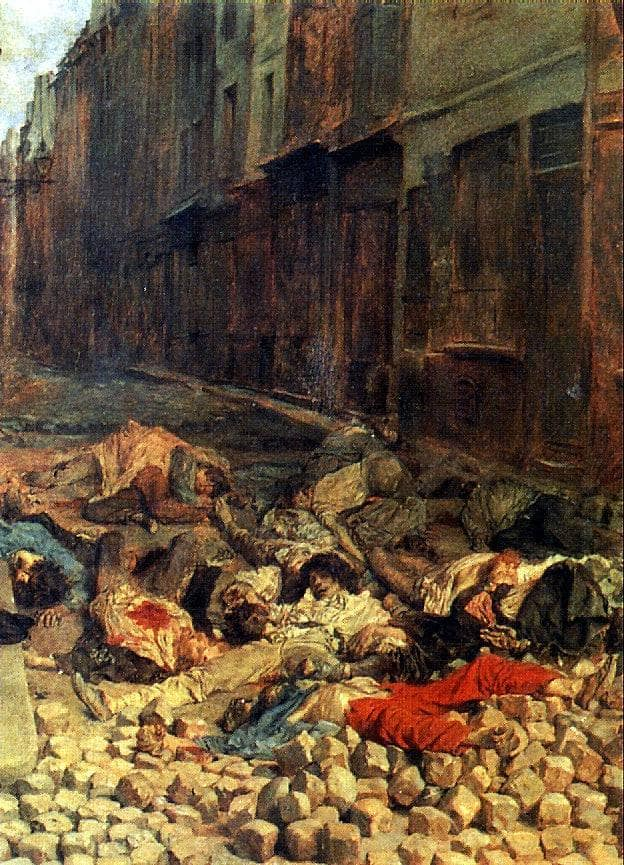
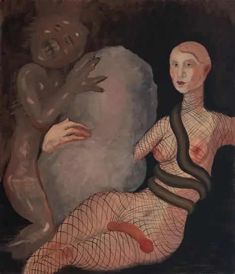
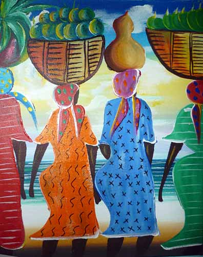
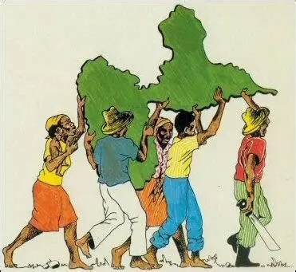
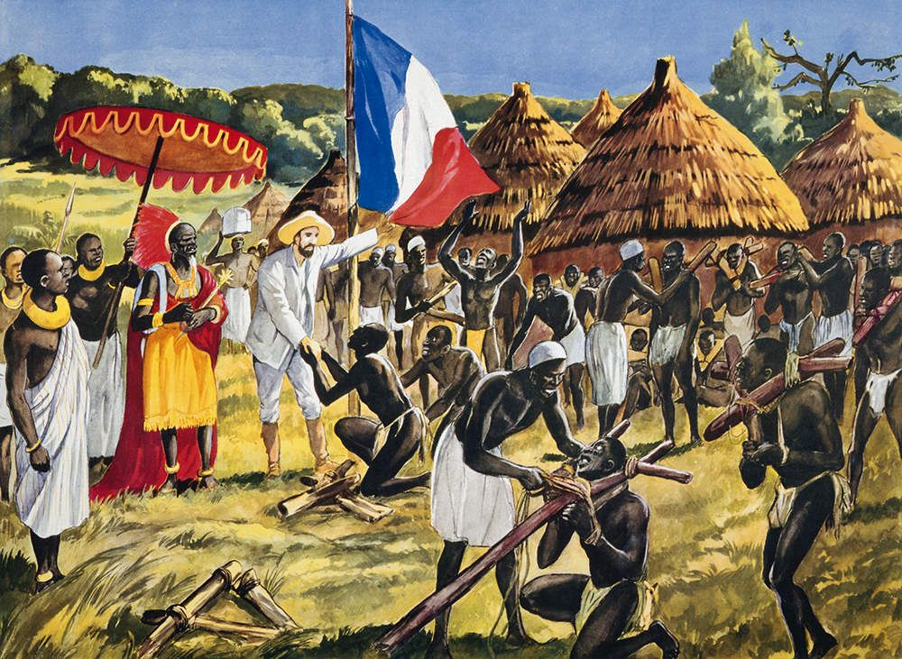
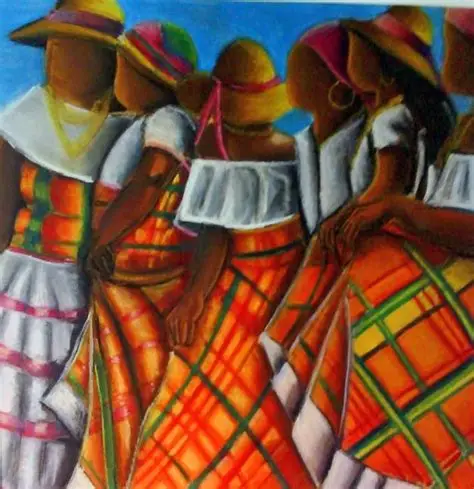
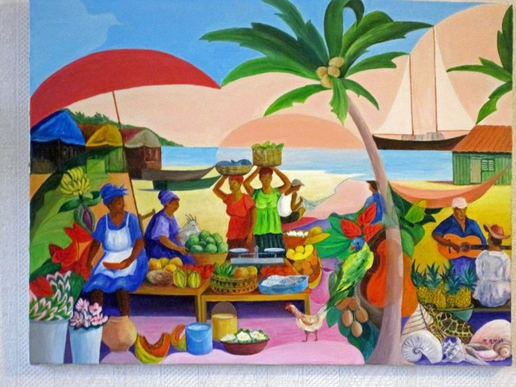
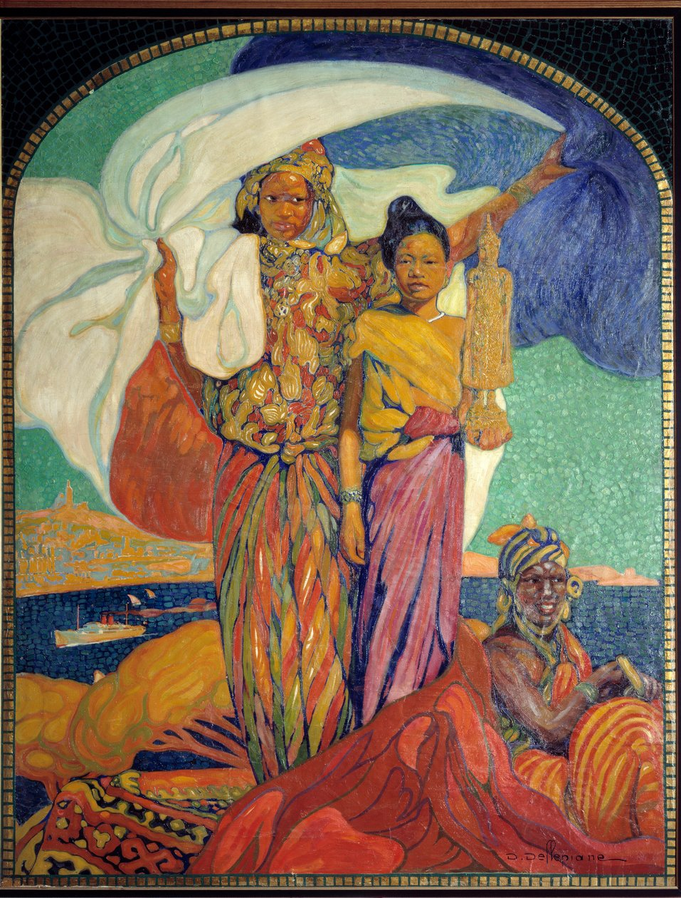
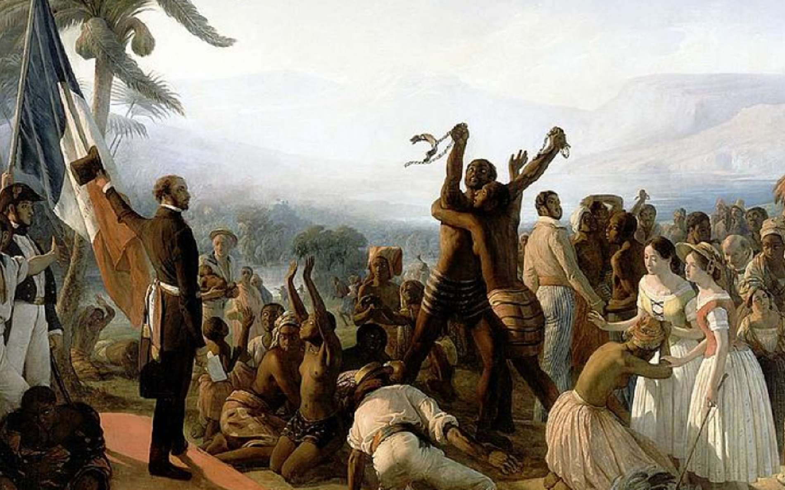
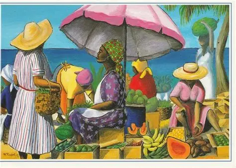

FRANCE

Découvrez l’art engagé, où chaque œuvre donne une
voix au peuple et témoigne de ses luttes.











INFORMATIONS PRATIQUES :
ADRESSE : 154 boulevard Voltaire, Paris 75011
TEL : +33 4 69 65 49 27
MAIL : artetresistance@gmail.com
HORRAIRES : MARDI-SAMEDI 10h-17h
RESEAUX SOCIAUX : @artetresistance
Fondée en 2022, Art et Résistance est une galerie engagée qui explore les liens entre l'art, la politique et les luttes populaires...
Notre galerie propose une exposition permanente, ainsi que des expositions temporaires...
Art et Résistance est un lieu de découverte et de réflexion...